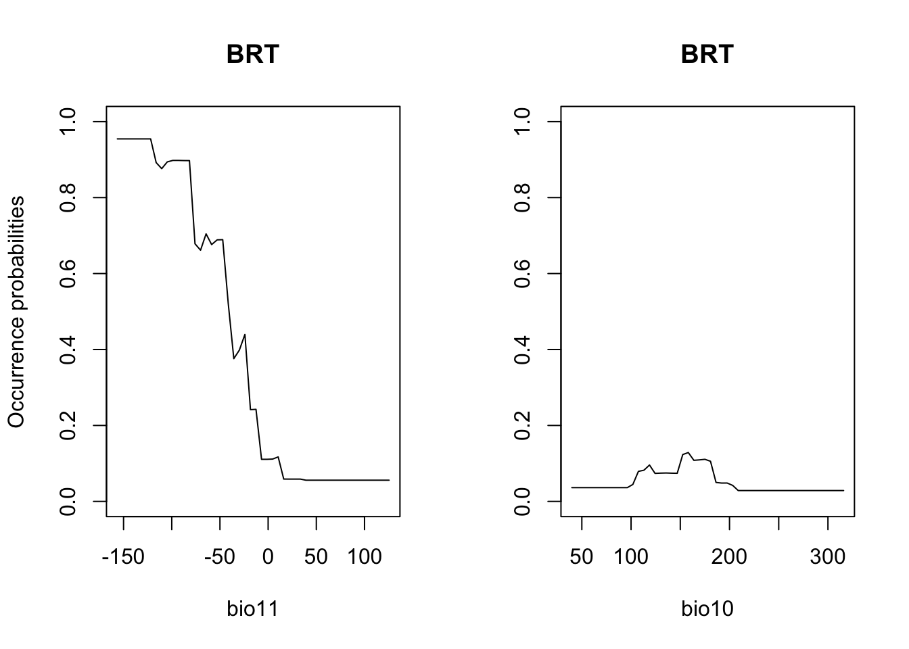

SDM algorithms
RStudio project
Open the RStudio project that we created in the first session. I recommend to use this RStudio project for the entire course and within the RStudio project create separate R scripts for each session.
- Create a new empty R script by going to the tab “File”, select “New File” and then “R script”
- In the new R script, type
# Session 7: SDM algorithms and ensemblesand save the file in your folder “scripts” within your project folder, e.g. as “7_SDM_algorithms.R”
1 Introduction
So far, we have learnt to fit GLMs to species presence-absence data. GLMs are only one, very simple parametric method for fitting SDMs. There are many more algorithms out there (Elith et al. 2006; Thuiller et al. 2009; Guisan, Thuiller, and Zimmermann 2017). Here, we will get to know a few of them. Remember the five general model building steps: (i) conceptualisation, (ii) data preparation, (iii) model fitting, (iv) assessment and (v) predictions (Zurell, Franklin, et al. 2020). These are the same for all SDMs independent of the particular algorithm used. In this tutorial, we will concentrate on model fitting again but will also run model assessments and make predictions in order to compare the different algorithms.
1.1 Recap of last session: data and model building steps
I will illustrate the different algorithms using the lynx example of sessions 5-6. The species presense/absence data and the bioclimatic variables at these locations are available from file. Also, remember that we have already tested the data for multicollinearity and identified bio11 and bio10 as weakly correlated variables with high univariate variable importance.
library(raster)
load('data/lynx_thinned.RData')
my_preds <- c('bio11', 'bio10')In session 6 on model assessment, we learned that the models should
be validated on indepedent validation data and we have learned how to
run a 5-fold cross-validation. The crossvalSDM() function
could also be used with the algorithms introduced in this practical.
However, to simplify matters let’s rather split the data into training
data and testing data once. For a proper validation this split-sample
should be repeated many times. Nevertheless, this unique split-sample
will still give us an idea of model performance and will allow us to
compare the different algorithms.
set.seed(54321)
# First, we randomly select 70% of the rows that will be used as training data
train_i <- sample(seq_len(nrow(lynx_thinned)), size=round(0.7*nrow(lynx_thinned)))
# Then, we can subset the training and testing data
lynx_train <- lynx_thinned[train_i,]
lynx_test <- lynx_thinned[-train_i,]
# We store the split information for later:
write(train_i, file='data/indices_traindata.txt')For making predictions in space, we also load the current climate layers that we downloaded previously.
bio_curr <- getData("worldclim", var="bio", res=10, download=F, path='data/clim_data')We again crop the climate data to European extent and aggregate them to 1° resolution.
# rough European extent
extent_eur <- c(-15,45,35,72)
# Crop data to European extent
bio_curr <- crop(bio_curr, extent_eur)
# Aggregate to 1° resolution
bio_curr <- aggregate(bio_curr, 6)2 Model algorithms
Typically, you should decide on appropriate modelling algorithms during the conceptualisation phase. Let’s assume our study objectives were to compare species-environment relationships and predicted species distributions across several SDM algorithms, for example to quantify the uncertainty due to the model class (Araujo and New 2007; Thuiller et al. 2009; Buisson et al. 2010). We will test several different SDM algorithms that can be broadly classified into profile (envelope and distance-based) methods, regression-based methods and non-parametric machine-learning methods Guisan, Thuiller, and Zimmermann (2017). We only cover four different algorithms here; for more example have a look at our Macroecology module.
2.1 Profile (envelope and distance-based) methods
Profile methods constitute the oldest family of SDM algorithms and are the only “true” presence-only methods that do not need any absence or background data, but rely on envelope or distance-based approaches.
2.1.1 BIOCLIM
BIOCLIM is a pioneering envelope approach (Booth et al. 2014). It defines the niche as an
n-dimensional, rectangular bounding box, which is similar to
Hutchinson’s view of the n-dimensional hyperspace (Hutchinson 1957). To reduce sensitivity to
outliers, the bounding box can be limited by only considering a certain
percentile range (e.g. 5-95%) of the species records along each
environmental gradient. In dismo, the BIOCLIM algorithm is
implemented such that it will produce continuous probabilities between 0
and 1, indicating how similar/close the environmental conditions are to
the median conditions.
library(dismo)
# Fit BIOCLIM model
m_bc <- bioclim(bio_curr[[my_preds]], # provide environmental raster
lynx_train[lynx_train$occ==1,1:2]) # provide coordinates of presence locations
plot(m_bc)The resulting plot shows the bounding box (5-95% percentile range). The red cross within the box is the median. We can also visualise this a response surface to get a better idea what BIOCLIM is predicting.
# For the response surface, we first prepare the 3D-grid with environmental gradient and predictions
xyz <- expand.grid(
seq(min(lynx_train[,my_preds[1]]),max(lynx_train[,my_preds[1]]),length=50),
seq(min(lynx_train[,my_preds[2]]),max(lynx_train[,my_preds[2]]),length=50))
names(xyz) <- my_preds
# Make predictions to gradients:
xyz$z <- predict(m_bc, xyz)
# Define colour palette:
library(RColorBrewer)
cls <- colorRampPalette(rev(brewer.pal(11, 'RdYlBu')))(100)
# Plot response surface:
library(lattice)
wireframe(z ~ bio11 + bio10, data = xyz, zlab = list("Occurrence prob.", rot=90),
drape = TRUE, col.regions = cls, scales = list(arrows = FALSE),
zlim = c(0, 1), main='BIOCLIM', xlab='bio11', ylab='bio10',
screen=list(z = -120, x = -70, y = 3))We nicely see the median as the peak of the surface, representing the median environmental conditions in presence locations. Let’s look at the corresponding partial response plots.
library(mecofun)
# Plot partial response curves:
par(mfrow=c(1,2))
partial_response(m_bc, predictors = lynx_train[,my_preds], main='BIOCLIM')Last, we validate model performance on the hold-out test data.
# We use the default MaxSens+Spec threshold:
(perf_bc <- evalSDM(lynx_test$occ, predict(m_bc, lynx_test[,my_preds])))## AUC TSS Kappa Sens Spec PCC D2 thresh
## 1 0.8711117 0.5979092 0.5963128 0.7735849 0.8243243 0.8031496 -0.2000966 0.11Finally, let’s map the predicted occurrence probabilities across Britain and the predicted presence/absence.
# Map predictions:
r_bc_pred <- r_bc_bin <- predict(m_bc,bio_curr)
# Threshold predictions using the maxTSS threshold (max sens+spec)
values(r_bc_bin) <- ifelse(values(r_bc_pred)>=perf_bc$thresh, 1, 0)
# plot the maps
plot(stack(r_bc_pred, r_bc_bin),main=c('BIOCLIM prob.','BIOCLIM bin.'), axes=F) 
2.2 Regression-based methods
2.2.1 Generalised linear models (GLMs)
We already know GLMs from the previous tutorials. We can fit linear,
quadratic or higher polynomial terms (check poly()) and
interactions between predictors.
# Fit GLM
m_glm <- step(glm( occ ~ bio11 + I(bio11^2) + bio10 + I(bio10^2),
family='binomial', data=lynx_train))## Start: AIC=189.26
## occ ~ bio11 + I(bio11^2) + bio10 + I(bio10^2)
##
## Df Deviance AIC
## - I(bio11^2) 1 179.44 187.44
## <none> 179.26 189.26
## - I(bio10^2) 1 206.69 214.69
## - bio10 1 207.08 215.08
## - bio11 1 217.02 225.02
##
## Step: AIC=187.44
## occ ~ bio11 + bio10 + I(bio10^2)
##
## Df Deviance AIC
## <none> 179.44 187.44
## - I(bio10^2) 1 207.52 213.52
## - bio10 1 208.02 214.02
## - bio11 1 268.86 274.86# Now, we plot the response surface:
xyz$z <- predict(m_glm, xyz, type='response')
wireframe(z ~ bio11 + bio10, data = xyz, zlab = list("Occurrence prob.", rot=90),
drape = TRUE, col.regions = cls, scales = list(arrows = FALSE),
zlim = c(0, 1), main='GLM', xlab='bio11', ylab='bio10',
screen=list(z = -120, x = -70, y = 3))# Plot partial response curves:
par(mfrow=c(1,2))
partial_response(m_glm, predictors = lynx_train[,my_preds], main='GLM')# Performance measures
(perf_glm <- evalSDM(lynx_test$occ, predict(m_glm, lynx_test[,my_preds], type='response') ))## AUC TSS Kappa Sens Spec PCC D2 thresh
## 1 0.936512 0.7437532 0.7538442 0.8113208 0.9324324 0.8818898 0.5162029 0.48# Map predictions:
bio_curr_df <- data.frame(rasterToPoints(bio_curr[[my_preds]]))
r_glm_bin <- r_glm_pred <- rasterFromXYZ(cbind(bio_curr_df[,1:2],
predict(m_glm, bio_curr_df, type='response')))
values(r_glm_bin) <- ifelse(values(r_glm_pred)>=perf_glm$thresh, 1, 0)
plot(stack(r_glm_pred, r_glm_bin),main=c('GLM prob.','GLM bin.'), axes=F) 2.3 Machine-learning methods
There are a number of different non-parametric machine-learning methods that are commonly used in SDMs, and new methods are constantly appearing. A few methods like Classification and Regression Trees (CART) and Artificial Neural Networks (ANN) have been around for some time, while other methods such as Boosted Regression Trees (BRTs), Random Forests (RFs) and Maximum Entropy (MaxEnt) have only become popular over the last decade.
2.3.1 Random Forests (RFs)
Regression models or classification models can be affected by local optima and noise in the data. They usually have low bias (fit the training data very well) but high variance (noisy/poorer performance when predicting to non-training data). Model averaging has been proposed as possible solution (Hastie, Tibshirani, and Friedman 2009). In recent years, so-called bagging and boosting methods have been developed for combining or averaging different models. Random Forests use a bagging procedure for averaging the outputs of a multitude of different CARTs (Classification and Regression Trees). Bagging stands for “bootstrap aggregation”. Basically, we fit many CARTs to bootstrapped samples of the training data and then either average the results in case of regression trees or make a simple vote in case of classification trees (committee averaging)(Hastie, Tibshirani, and Friedman 2009; Guisan, Thuiller, and Zimmermann 2017). An important feature of Random Forests are the out-of-bag samples, which means that the predictions/fit for a specific data point is only derived from averaging trees that did not include this data point during tree growing. Thus, the output of Random Forests is essentially cross-validated. Random Forests estimate variable importance by a permutation procedure, which measures for each variable the drop in mean accuracy when this variables is permutated.
library(randomForest)
# Fit RF
m_rf <- randomForest( x=lynx_train[,my_preds], y=lynx_train$occ,
ntree=1000, importance =T)
# Variable importance:
importance(m_rf,type=1)## %IncMSE
## bio11 92.58769
## bio10 44.73107varImpPlot(m_rf)# Look at single trees:
head(getTree(m_rf,1,T))## left daughter right daughter split var split point status prediction
## 1 2 3 bio11 -22.11111 -3 0.29729730
## 2 4 5 bio10 176.73611 -3 0.59859155
## 3 6 7 bio10 205.01389 -3 0.01948052
## 4 8 9 bio11 -116.71569 -3 0.70175439
## 5 10 11 bio11 -23.59722 -3 0.17857143
## 6 12 13 bio10 204.04167 -3 0.03947368# Now, we plot the response surface:
xyz$z <- predict(m_rf, xyz, type='response')
wireframe(z ~ bio11 + bio10, data = xyz, zlab = list("Occurrence prob.", rot=90),
drape = TRUE, col.regions = cls, scales = list(arrows = FALSE),
zlim = c(0, 1), main='Random Forest', xlab='bio11', ylab='bio10',
screen=list(z = -120, x = -70, y = 3))# Plot partial response curves:
par(mfrow=c(1,2))
partial_response(m_rf, predictors = lynx_train[,my_preds], main='Random Forest')# Performance measures of RF
(perf_rf <- evalSDM(lynx_test$occ, predict(m_rf, lynx_test[,my_preds], type='response') ))## AUC TSS Kappa Sens Spec PCC D2 thresh
## 1 0.9535951 0.7598164 0.7577877 0.8679245 0.8918919 0.8818898 0.5817348 0.355# Map predictions:
r_rf_bin <- r_rf_pred <- rasterFromXYZ(cbind(bio_curr_df[,1:2],
predict(m_rf, bio_curr_df,type='response')))
values(r_rf_bin) <- ifelse(values(r_rf_pred)>=perf_rf$thresh, 1, 0)
plot(stack(r_rf_pred, r_rf_bin),main=c('RF prob.','RF bin.'), axes=F) 
2.3.2 Boosted regression trees (BRTs)
Boosting is another averaging/ensemble approach for improving the
predictive performance of models (Hastie,
Tibshirani, and Friedman 2009; Guisan, Thuiller, and Zimmermann
2017). Boosting of CARTS is known under different names including
Gradient Boosting Machine (GBM), Generalised Boosted Regression Model
(GBM) and Boosted Regression Trees (BRTs) among others. In R it is
available in the package gbm with some additional functions
from Elith, Leathwick, and Hastie (2008)
provided in the dismo package. Elith,
Leathwick, and Hastie (2008) also provide a working guide for
using BRTs in species distribution modelling. Unlike Random Forests,
BRTs iteratively fit relatively simple trees by putting emphasis on
observations fitted poorly by the previous trees (by fitting the new
tree to the residuals of the previous tree). The final BRT can be
thought of as linear combination of all trees, similar to a regression
model where each term is a single tree (Elith,
Leathwick, and Hastie 2008). Thereby each tree is shrunk by the
learning rate (the shrinkage parameter, typically <1), which
determines how much weight is given to single trees. Generally, slower
learning (meaning smaller learning rates) are preferable. Similarly to
Random Forests, only a subset of the data (the bag fraction) is
used for fitting consecutive trees (but in contrast to Random Forests,
the subsets are sampled without replacement and thus constitute real
data splits). This bag fraction should typically range 0.5-0.75
(Elith, Leathwick, and Hastie 2008). The
tree complexity controls the interaction depth; 1 means
only tree stumps (with two terminal nodes) are fitted, 2
means a model with up to two-way interactions etc. In the regular
gbm()function, you have to define the maximum number of
trees fitted. Elith, Leathwick, and Hastie
(2008) recommend fitting at least 1000 trees. However, you want
to be careful not to overfit the model by fitting too many trees. The
dismo package provides the function gbm.step that
selects the optimum number of trees based on the reduction in deviance
achieved by adding a tree while predicting to the hold-out data
(1-bag fraction). If the optimal number of trees estimated
by the model is below 1000, you should decrease your learning rate; if
it is above 10000, you should increase your learning rate. A tutorial on
BRTs is contained in the dismo package: vignette('brt')
library(gbm)
# Fit BRT
m_brt <- gbm.step(data = lynx_train,
gbm.x = my_preds,
gbm.y = 'occ',
family = 'bernoulli',
tree.complexity = 2,
bag.fraction = 0.75,
learning.rate = 0.001,
verbose=F)##
##
## GBM STEP - version 2.9
##
## Performing cross-validation optimisation of a boosted regression tree model
## for NA and using a family of bernoulli
## Using 296 observations and 2 predictors
## creating 10 initial models of 50 trees
##
## folds are stratified by prevalence
## total mean deviance = 1.1867
## tolerance is fixed at 0.0012
## now adding trees...# Variable importance:
m_brt$contributions## var rel.inf
## bio11 bio11 73.65121
## bio10 bio10 26.34879# Interactions (not very meaningful here with only 2 predictors):
gbm.interactions(m_brt)$interactions## bio11 bio10
## bio11 0 101.95
## bio10 0 0.00gbm.interactions(m_brt)$rank.list## var1.index var1.names var2.index var2.names int.size
## 1 2 bio10 1 bio11 101.95
## 2 3 <NA> 0 0.00# Now, we plot the response surface:
xyz$z <- predict.gbm(m_brt, xyz, n.trees=m_brt$gbm.call$best.trees, type="response")
wireframe(z ~ bio11 + bio10, data = xyz, zlab = list("Occurrence prob.", rot=90),
drape = TRUE, col.regions = cls, scales = list(arrows = FALSE),
zlim = c(0, 1), main='Boosted regression trees', xlab='bio11',
ylab='bio10', screen=list(z = -120, x = -70, y = 3))# Plot partial response curves:
par(mfrow=c(1,2))
partial_response(m_brt, predictors = lynx_train[,my_preds], main='BRT')
# Performance measures of BRT
(perf_brt <- evalSDM(lynx_test$occ, predict.gbm(m_brt, lynx_test[,my_preds], n.trees=m_brt$gbm.call$best.trees, type='response') ))## AUC TSS Kappa Sens Spec PCC D2 thresh
## 1 0.9507904 0.754462 0.7564873 0.8490566 0.9054054 0.8818898 0.5545085 0.39# Map predictions:
r_brt_bin <- r_brt_pred <- rasterFromXYZ(cbind(bio_curr_df[,1:2],
predict.gbm(m_brt, bio_curr_df,
n.trees=m_brt$gbm.call$best.trees,
type="response")))
values(r_brt_bin) <- ifelse(values(r_brt_pred)>=perf_brt$thresh, 1, 0)
plot(stack(r_brt_pred, r_brt_bin),main=c('BRT prob.','BRT bin.'), axes=F) 2.4 Comparing all algorithms
We can now compare the performance of all algorithms on our independent data.
(comp_perf <- rbind(bc = perf_bc, glm = perf_glm, rf = perf_rf, brt = perf_brt))## AUC TSS Kappa Sens Spec PCC D2
## bc 0.8711117 0.5979092 0.5963128 0.7735849 0.8243243 0.8031496 -0.2000966
## glm 0.9365120 0.7437532 0.7538442 0.8113208 0.9324324 0.8818898 0.5162029
## rf 0.9535951 0.7598164 0.7577877 0.8679245 0.8918919 0.8818898 0.5817348
## brt 0.9507904 0.7544620 0.7564873 0.8490566 0.9054054 0.8818898 0.5545085
## thresh
## bc 0.110
## glm 0.480
## rf 0.355
## brt 0.390# We add a column containing the names of the algorithm
comp_perf <- data.frame(alg=row.names(comp_perf),comp_perf)
# Adapt the file path to your folder structure
write.table(comp_perf, file='data/SDM_alg_performances.txt', row.names=F)3 Model ensembles
But how do we proceed with all these models now? In the end, it would be handy to just work with a single, general prediction. One way to achive a single prediction would be to select the best performing algorithm. However, we have also seen that different models make different assumptions and extrapolate differently to new environments. A priori, it is difficult to judge which of the algorithms will perform best in new situations. Ensemble models have been introduced as an alternative (Araujo and New 2007). These combine different models and provide information about the overall trend and the uncertainty around this trend (Guisan, Thuiller, and Zimmermann 2017; Thuiller et al. 2019). Sometimes, the term ensembles is used synonymously with model averaging (Dormann et al. 2018) when only different model algorithms are combined. According to Araujo and New (2007), ensembles could also take into account varying initial and boundary conditions (e.g. different data inputs, and different future scenarios).
In ensembles, predictions can be combined or averaged in different ways (Thuiller et al. 2009). Simple averages of predictions are derived using the arithmetic mean or the median. An alternative is to use weighted averages. Here, each model receives a weight derived from information criteria (e.g. AIC) or from predictive performance (e.g. AUC or TSS derived from cross-validation or split-sample approaches). To assess uncertainty in model predictions, we can, for example, calculate the coefficient of variation or standard deviation.
Here, we will concentrate on how different algorithms can be combined into ensemble predictions. This is primarily meant to show you the main workflow. The ensembles can be adopted individually by using less, more or simply other algorithms, by using different parameterisations for the different algorithms, by using different input data (e.g. atlas data vs. range maps), and projections can be made to different scenarios of future (or past) global change.
There is one important note for forecast ensembles. Typically, we would make projections under climate change or land use change for scenarios derived from different climate models or land use models. This captures the uncertainty from different underlying model assumptions. This should not be confused with different storylines (the old SRES storylines or newer RCPs in climate models, or the SSPs in land use models; Vuuren and Carter (2013)). When making projections into the future, we would typically combine ensembles of predictions for different SDM algorithms and different climate and land use models. However, we would not combine projections for different storylines, but would want to analyse the potential pathways separately.
3.1 Single model predictions
We first derive the predictions for each single model algorithms - here, we predict to independent test data:
pred_testdata <- data.frame(
bc = predict(m_bc, lynx_test[,my_preds]),
glm = predict(m_glm, lynx_test[,my_preds], type='response'),
rf = predict(m_rf, lynx_test[,my_preds], type='response'),
brt = predict.gbm(m_brt, lynx_test[,my_preds],
n.trees=m_brt$gbm.call$best.trees, type="response")
)
summary(pred_testdata)## bc glm rf brt
## Min. :0.00000 Min. :0.00000 Min. :0.00000 Min. :0.02173
## 1st Qu.:0.00000 1st Qu.:0.03077 1st Qu.:0.01358 1st Qu.:0.04313
## Median :0.07229 Median :0.34724 Median :0.23708 Median :0.26286
## Mean :0.16175 Mean :0.37964 Mean :0.37398 Mean :0.37504
## 3rd Qu.:0.25301 3rd Qu.:0.71118 3rd Qu.:0.75949 3rd Qu.:0.72364
## Max. :0.89157 Max. :0.96016 Max. :0.99780 Max. :0.94510As we have stored the maxSens+Spec threshold for each model, we can also threshold the predictions to obtain predicted presences and absences.
# We use the sapply function to apply the thresholding to all columns
# in the prediction data frame. You could also use a loop or construct
# the data frame by hand.
binpred_testdata <- sapply(names(pred_testdata), FUN=function(alg){
ifelse(pred_testdata[,alg]>=comp_perf[comp_perf$alg==alg,'thresh'],1,0)
})
summary(binpred_testdata)## bc glm rf brt
## Min. :0.0000 Min. :0.000 Min. :0.0000 Min. :0.0000
## 1st Qu.:0.0000 1st Qu.:0.000 1st Qu.:0.0000 1st Qu.:0.0000
## Median :0.0000 Median :0.000 Median :0.0000 Median :0.0000
## Mean :0.4252 Mean :0.378 Mean :0.4252 Mean :0.4094
## 3rd Qu.:1.0000 3rd Qu.:1.000 3rd Qu.:1.0000 3rd Qu.:1.0000
## Max. :1.0000 Max. :1.000 Max. :1.0000 Max. :1.00003.2 Making ensembles
We have gathered all information now that we need for making
ensembles: evaluation statistics, optimal thresholds for binary
predictions, and model predictions. The predictions can be combined into
ensembles in different ways:
- mean of probabilities
- median of probabilities
- weighted mean of probabilities (weighted by model performance)
- committee averaging of binary predictions (what is the proportion of
models predicting a presence?)
# Mean of probabilities
mean_prob <- rowMeans(pred_testdata)
# Median of probabilities
median_prob <- apply(pred_testdata, 1, median)
# Weighted mean of probabilities, weighted by TSS
# (Make sure that order of models is the same in df for predictions and performance!!)
wmean_prob <- apply(pred_testdata, 1, weighted.mean, w=comp_perf[,'TSS'])
# Committee averaging of binary predictions: calculates the proportion of
# models that predict the species to be present.
committee_av <- rowSums(binpred_testdata)/ncol(binpred_testdata)
# We can also calculate uncertainty measures,
# e.g. the standard deviation when making ensembles of mean probabilities.
sd_prob <- apply(pred_testdata, 1, sd)Thus, ensembles can be easily constructed by hand. Of course, if you
have many input data, models, and scenarios to put into your ensemble,
this is easily becoming tedious. For that purpose, it will be very
useful to automatise your code and write automatic functions. For an
example for automatising your functions, have a look at the code that we
published along with Zurell, Zimmermann, et al.
(2020), which you can obtain from the corresponding github repository.
Also, there are packages like biomod2 that make it easy to
construct ensembles automatically (Thuiller et
al. 2009).
Now, let’s assess the performance of these ensembles.
# performance measures for "mean of probabilities"
(perf_mean_prob <- evalSDM(lynx_test$occ, mean_prob))## AUC TSS Kappa Sens Spec PCC D2 thresh
## 1 0.9525752 0.7840388 0.7757316 0.9056604 0.8783784 0.8897638 0.5037352 0.31# performance measures for "median of probabilities":
(perf_median_prob <- evalSDM(lynx_test$occ, median_prob))## AUC TSS Kappa Sens Spec PCC D2 thresh
## 1 0.9523202 0.7758797 0.7616068 0.9245283 0.8513514 0.8818898 0.5481092 0.28# performance measures for "weighted mean of probabilities":
(perf_wmean_prob <- evalSDM(lynx_test$occ, wmean_prob))## AUC TSS Kappa Sens Spec PCC D2 thresh
## 1 0.95436 0.7840388 0.7757316 0.9056604 0.8783784 0.8897638 0.5157303 0.32# Compare:
(ens_perf <- rbind(mean_prob = perf_mean_prob, median_prob = perf_median_prob,
wmean_prob = perf_mean_prob))## AUC TSS Kappa Sens Spec PCC
## mean_prob 0.9525752 0.7840388 0.7757316 0.9056604 0.8783784 0.8897638
## median_prob 0.9523202 0.7758797 0.7616068 0.9245283 0.8513514 0.8818898
## wmean_prob 0.9525752 0.7840388 0.7757316 0.9056604 0.8783784 0.8897638
## D2 thresh
## mean_prob 0.5037352 0.31
## median_prob 0.5481092 0.28
## wmean_prob 0.5037352 0.31# Note that we do not assess the performance of the committee average as the interpretation of this ensemble is quite different: it gives the proportion of models that agree on predicted presence3.3 Visualising response surfaces
Let’s plot the response surfaces for the ensembles.
# Response surfaces:
# Make predictions of all models to hypothetical grid:
xyz_preds <- data.frame(
bc = predict(m_bc, xyz),
glm = predict(m_glm, xyz, type='response'),
rf = predict(m_rf, xyz, type='response'),
brt = predict.gbm(m_brt, xyz,
n.trees=m_brt$gbm.call$best.trees, type="response")
)
# Make binary predictions
xyz_bin <- sapply(names(xyz_preds), FUN=function(alg){
ifelse(xyz_preds[,alg]>=comp_perf[comp_perf$alg==alg,'thresh'],1,0)
})
# Make ensembles:
xyz_ensemble <- data.frame(
mean_prob = rowMeans(xyz_preds),
median_prob = apply(xyz_preds, 1, median),
wmean_prob = apply(xyz_preds, 1, weighted.mean, w=comp_perf[,'TSS']),
committee_av = rowSums(xyz_bin)/ncol(xyz_bin),
sd_prob = apply(xyz_preds, 1, sd)
)
# Plot ensemble of mean probabilities:
xyz$z <- xyz_ensemble[,'mean_prob']
wireframe(z ~ bio11 + bio10, data = xyz, zlab = list("Occurrence prob.", rot=90),
drape = TRUE, col.regions = cls, scales = list(arrows = FALSE),
zlim = c(0, 1), main='Ensemble: mean prob', xlab='bio11',
ylab='bio10', screen=list(z = -120, x = -70, y = 3))# Plot ensemble of median probabilities:
xyz$z <- xyz_ensemble[,'median_prob']
wireframe(z ~ bio11 + bio10, data = xyz, zlab = list("Occurrence prob.", rot=90),
drape = TRUE, col.regions = cls, scales = list(arrows = FALSE),
zlim = c(0, 1), main='Ensemble: median prob', xlab='bio11',
ylab='bio10', screen=list(z = -120, x = -70, y = 3))# Plot ensemble of weighted mean probabilities:
xyz$z <- xyz_ensemble[,'wmean_prob']
wireframe(z ~ bio11 + bio10, data = xyz, zlab = list("Occurrence prob.", rot=90),
drape = TRUE, col.regions = cls, scales = list(arrows = FALSE),
zlim = c(0, 1), main='Ensemble: weighted mean prob', xlab='bio11',
ylab='bio10', screen=list(z = -120, x = -70, y = 3))# Plot ensemble of committee average. This provides the proportion of models that agree on predicted presence:
xyz$z <- xyz_ensemble[,'committee_av']
wireframe(z ~ bio11 + bio10, data = xyz, zlab = list("Occurrence prob.", rot=90),
drape = TRUE, col.regions = cls, scales = list(arrows = FALSE),
zlim = c(0, 1), main='Ensemble: committee average', xlab='bio11',
ylab='bio10', screen=list(z = -120, x = -70, y = 3))# Plot standard deviation of mean probabilities. This gives us an indication where in environmental space we have highest uncertainty:
xyz$z <- xyz_ensemble[,'sd_prob']
wireframe(z ~ bio11 + bio10, data = xyz, zlab = list("Occurrence prob.", rot=90),
drape = TRUE, col.regions = cls, scales = list(arrows = FALSE),
zlim = c(0, 1), main='Ensemble: sd', xlab='bio11', ylab='bio10',
screen=list(z = -120, x = -70, y = 3))3.4 Mapping ensemble predictions
Finally, let’s do some mapping. We first map the occurrence probabilities predicted by the different algorithms as well as the potential presences.
# Prepare data frame with environmental data
bio_curr_df <- data.frame(rasterToPoints(bio_curr[[my_preds]]))
# We make predictions of all models:
env_preds <- data.frame(bio_curr_df[,1:2],
bc = predict(m_bc, bio_curr_df),
glm = predict(m_glm, bio_curr_df, type='response'),
rf = predict(m_rf, bio_curr_df, type='response'),
brt = predict.gbm(m_brt, bio_curr_df,
n.trees=m_brt$gbm.call$best.trees, type="response"))
# Binarise predictions of all algorithms
env_preds_bin <- data.frame(bio_curr_df[,1:2],
sapply(names(env_preds[,-c(1:2)]), FUN=function(alg){
ifelse(env_preds[,alg]>=comp_perf[comp_perf$alg==alg,'thresh'],1,0)
}))
# Make rasters from predictions:
r_preds <- rasterFromXYZ(env_preds, crs=crs(bg))
r_preds_bin <- rasterFromXYZ(env_preds_bin, crs=crs(bg))
# Map predicted occurrence probabilities:
spplot(r_preds)# Map predicted presences:
spplot(r_preds_bin)Now, we map the ensemble predictions.
# We make ensembles:
env_ensemble <- data.frame(bio_curr_df[,1:2],
mean_prob = rowMeans(env_preds[,-c(1:2)]),
median_prob = apply(env_preds[,-c(1:2)], 1, median),
wmean_prob = apply(env_preds[,-c(1:2)], 1, weighted.mean, w=comp_perf[,'TSS']),
committee_av = rowSums(env_preds_bin[,-c(1:2)])/ncol(env_preds_bin[,-c(1:2)]),
sd_prob = apply(env_preds[,-c(1:2)], 1, sd))
# Make rasters from ensemble predictions:
r_ens <- rasterFromXYZ(env_ensemble, crs=crs(bg))
# Map continuous ensemble predictions:
spplot(r_ens[[1:4]])Mapping the standard deviation of model predictions shows us the areas of highest deviation between model algorithms.
# Map standard deviation across model algorithms:
plot(r_ens[['sd_prob']])We can also derive binary ensemble predictions. We have already estimated the optimal thresholds when calculating the performance measures for the ensembles.
# Binarise ensemble predictions
env_ensemble_bin <- data.frame(bio_curr_df[,1:2],
sapply(c('mean_prob', 'median_prob', 'wmean_prob'),
FUN=function(x){ifelse(env_ensemble[,x]>= ens_perf[x,'thresh'],1,0)}))
# Make rasters:
r_ens_bin <- rasterFromXYZ(env_ensemble_bin, crs=crs(bg))
# Map predicted presence from ensembles:
spplot(r_ens_bin) 4 Outlook
We have now fitted multiple SDM algorithms to our species distribution data and made predictions in space and time. Of course, science doesn’t stop here and you may want to answer different questions using the SDM. I only provide some hints here.
In conservation, we often aim to prioritise the most important sites for reserve selection.
- Identify the top 5 % suitable area (the 5 % of cells with the highest habitat suitability)
- Compare the top 5 % suitable area across different SDM algorithms
- Overlay the top 5 % suitable area for multiple species (if you fitted SDMs to multiple species)
Some more advanced questions could analyse biodiversity changes. For example:
- Make predictions to future climate layers and compare how much the lynx is predicted to win or lose in range size under climate change and how this prediction varies across model algorithms?
- Where is your species range predicted to remain stable, to become unsuitable or to become colonisable under climate change? (Hints how to visualise this can be found in our Macroecology practicals)
What other ideas do you have?